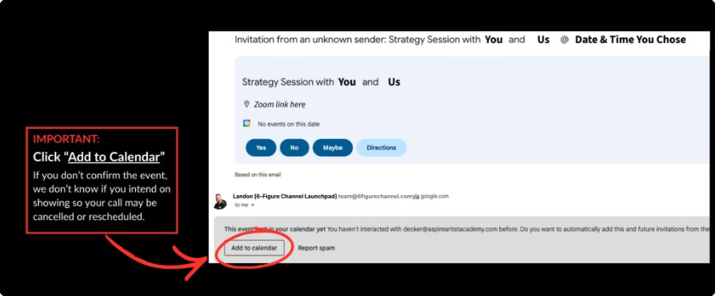
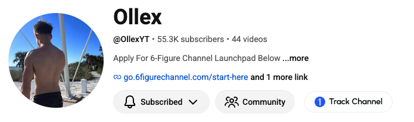

Views compound. Once your channel is monetized, every extra million views turns into more money each month.
Illustrative path based on what our students have done. Results vary with your topic, consistency and effort.
It's a casual chat with a member of the 6-Figure Channel team. We get to know you and what you actually want out of life, then work out whether faceless YouTube can get you there.
We take people who know nothing about YouTube and get them running a profitable faceless YouTube Shorts channel.
YouTube runs ads on your videos and pays you monthly. You need 1,000 subscribers and 10M Shorts views to switch it on.
1–2 hours a day, around the job you already have. You never appear on camera.
Yes, and most of our students started with zero YouTube experience. Here's exactly why it doesn't hold you back:
I can't ethically give you an exact date, because it honestly depends. It comes down to your topic, how consistently you post, and whether one video takes off. To give you an idea of what's been possible:
Most people teaching this made their money years ago and stopped. I'm still doing it right now, today.
Got a question we didn't answer? Bring it to the call.